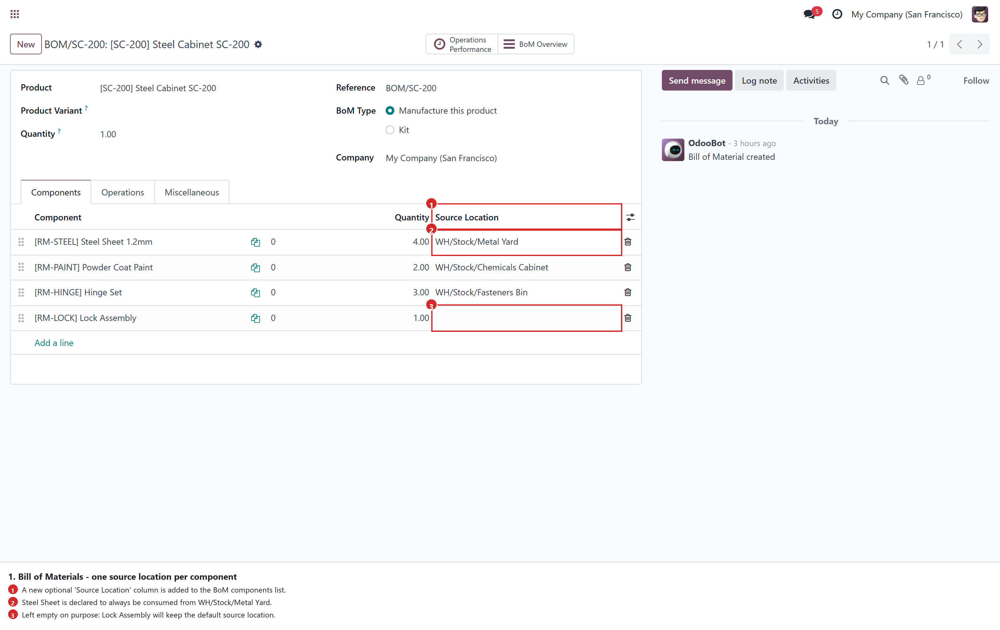
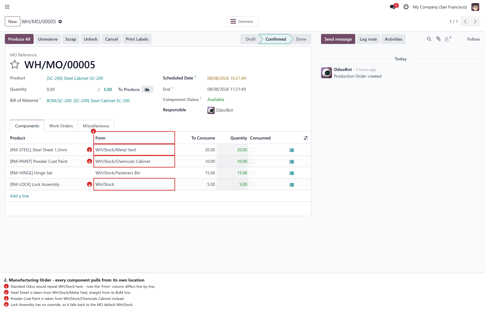
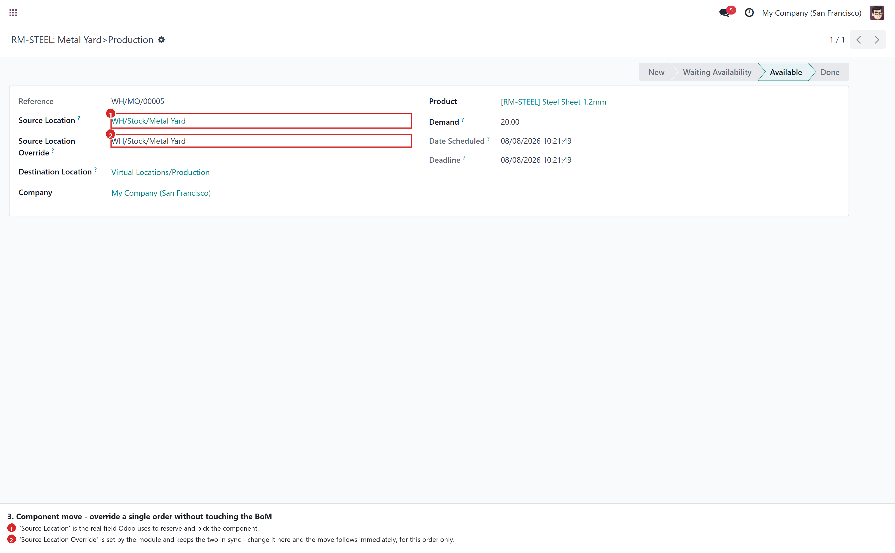
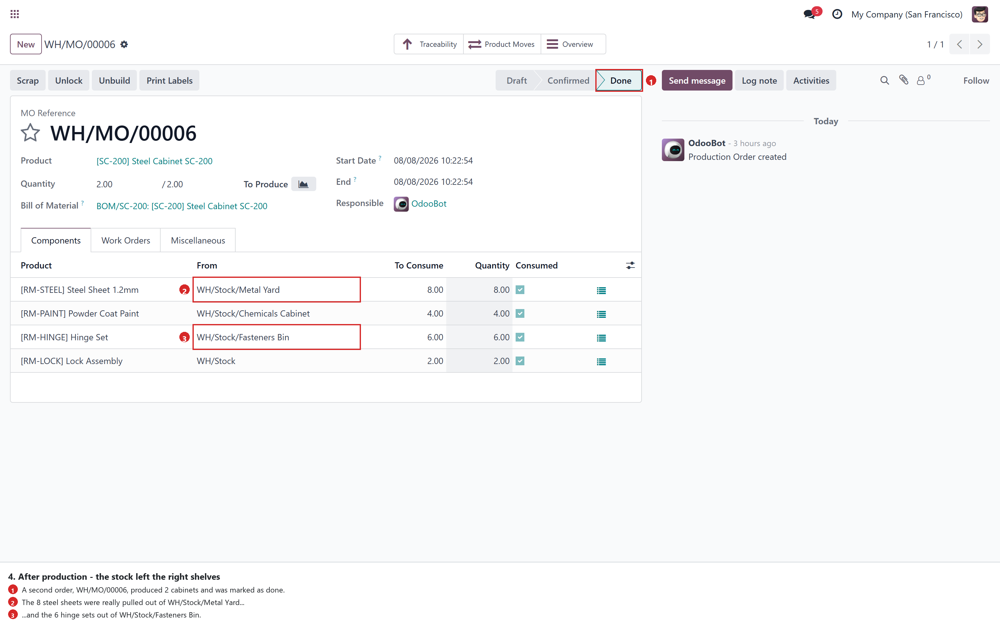
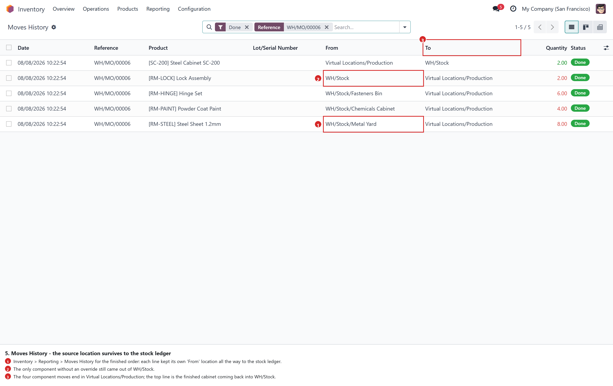

Standard Odoo pulls every raw material of a Manufacturing Order from the same source location — the one configured on the operation type. This module lets each Bill of Materials line declare where its component really lives, and every Manufacturing Order created from that BoM picks each component from its own shelf, bin or yard.
Steel, paint and fasteners are stored in three different zones, but the Manufacturing Order asks for all of them from WH/Stock. Either the warehouse keeper edits every component line by hand on every order, or the reservation grabs quantities from the wrong place.
You state the storage zone once, on the Bill of Materials. Every order built from that BoM — today and next year — reserves, picks and consumes each component from the right location, with no manual step.
A Source Location column is added to the BoM components list. It is an optional column, so switch it on once from the small toggle at the right end of the header row. Only internal locations can be selected, and leaving a line empty is a valid choice: that component simply keeps the default behaviour.

Create a Manufacturing Order for that product and the component lines are generated with their own source location already filled in. The From column, which used to repeat the same value on every row, now shows exactly where each material will be taken from — and the reservation follows: the 20 steel sheets are reserved in Metal Yard, the 10 kg of paint in Chemicals Cabinet, the 15 hinge sets in Fasteners Bin.

Sometimes this one batch has to be taken from somewhere else. Open the component move and set Source Location Override: the module writes the real source location of the move for you, so the change is effective immediately — for this order only. The field is only shown on manufacturing component moves, so ordinary deliveries and receipts are untouched. If the BoM is later re-applied to the order with Update BoM, a line you overrode by hand keeps your value.

Nothing changes in the way you work: mark the order as done as usual. The on-hand quantity of each zone drops by exactly what that zone supplied — 8 sheets out of Metal Yard, 4 kg out of Chemicals Cabinet, 6 sets out of Fasteners Bin, and 2 locks out of plain WH/Stock for the component with no override.

The source location is not cosmetic: it is the location of the stock move itself, so it reaches the quants, the Moves History report and the valuation. Inventory reporting shows each component leaving its own zone towards Virtual Locations/Production.

mrp.bom.line.source_location_id and
stock.move.source_location_id — and three methods are extended:
mrp.production._get_move_raw_values,
mrp.production._link_bom and
stock.move.create / write. No data file, no new menu,
no scheduled action; uninstalling simply removes the two columns and the orders go back to
the default source location.